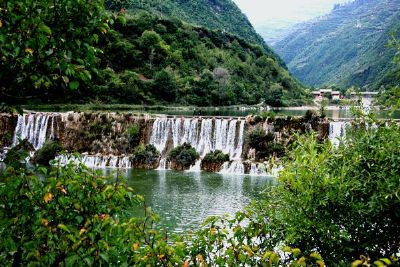
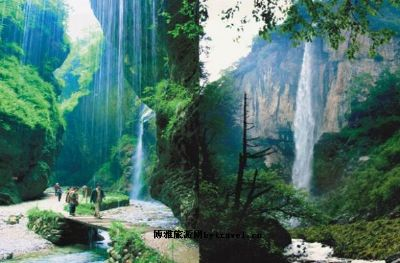

鸡峰山
鸡峰山国家森林公园，位于成县西南5公里处。它东接仙人崖，西连乱山，北临南河。鸡峰山以峰美、水秀、洞奇而得名，号称陇南第一山，徽成第一景，享誉陕、甘、川三省。鸡峰山，因奇峰孤耸、直入云际，状似鸡首而得名。据鸡峰山留存的北魏摩崖石刻和宋真宗赵亘时期的碑刻记载，汉代就有摩崖石刻西峡颂，唐代已初具规模，宋代山上就有规模宏大的寺庙建筑和佛教活动。鸡峰山公园总面积为4200公顷，林地面积5000亩。植被以华山松、油松、落叶松为主，间有经济树种红青岗、板栗、刺五加、观赏植物铁木匠、粗榧、水柏等。野生动物有羚羊、梅花鹿、野猪、狼兔等。鸡峰山共有18景，景景奇观、“云卧仙人床”，“清泉出龙口”“石鸡凌绝壁”，“云海浮仙山”，等尤为出名。嵋洛峰北山腰的“云卧仙人床”，东山腰的“清泉出龙洞”,石洞天生,洞内钟乳石星罗棋布,万象森列,神龛下泉水涌流,澄碧清澈,每遇雨天,洞内云雾喷涌而出,如玉龙出洞,腾旋飞舞。龙洞……

官鹅沟
官鹅沟国家森林公园位于甘肃省宕昌县城郊，距甘肃省省会兰州市340公里。2003年10月，晋升为国家级森林公园。官鹅沟国家森林公园位于甘肃省宕昌县城郊，距甘肃省省会兰州市340公里。地处青藏高原东部边缘与秦岭、岷山两大山系支脉的交错地带，公园毗邻中国革命历史文化名镇哈达铺，衔接世界文化遗产九寨沟风景名胜区。1999年经甘肃省林业厅批准，建立了大河坝省级森林公园。经过多年的开发建设，公园经营管理体系日臻完善。地理地貌官鹅沟国家森林公园范围包括大河坝沟、马圈沟、官鹅沟、缸沟、八峡沟、大庙滩六大景区，东西长39公里，南北宽41公里，总面积500平方公里，森林覆盖率达75.1%。公园集森林景观、草原景观、地貌景观、水体景观、天象景观等自然景观和人文景观于一体，景观资源整体品位高，空间布局特点突出，动植物分布多样，生态环境优美，自然景观奇特。依据《中国森林公园风景资源质量等级评定》有关指标，经专家评定……

晚霞湖
晚霞湖晚霞湖位于西和县城以西5公里处的姜席镇境内。为陇南市十大重点旅游景点之一，属长江流域，嘉陵江水系，西汉水流域、漾水河支流的姜席河下游。水即郦道元《水经注·漾水》所称的建安水。晚霞湖水库库容为1035万立方米，水域面积1800多亩。晚家峡水库修建于1960年，1976年纪念毛泽东畅游长江10周年活动中，天水地区曾举行大型游泳赛（注：此时西和县属天水地区），2006年首届甘肃西和仇池山歌文化艺术节主会场亦在此设立，该水库是目前陇东南地区最大的水库。也是甘肃著名的高山水库，风景秀丽，交通便利。２００８年，晚霞湖水利风景区经中华人民共和国水利部水利风景区评审委员会批准，成为“国家水利风景区”。特别是近年来西和县依托这方秀水，大力发展旅游产业，2002年以来，西和县委、县政府启动实施了晚霞湖库区农业综合开发工程，涉及周边1镇4乡24村6万亩土地1.7万人口，通过整体推进的方式，实施旅游、林果、……